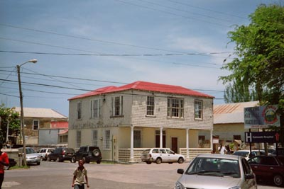

The Cozens/Byrnes Merchants Networks Project - Updated 11 February
2007
The Cozens/Byrnes Merchants Networks Project - Updated 11 February
2007
The Cozens/Byrnes Merchants Networks Project - Updated 11 February
2007
The Cozens/Byrnes Merchants Networks Project - Updated 11 February
2007
By Pieter Dickson
The more enlightened proprietors, who knew the island from experience or who lived in the midst of their people, better understood the daily detail of pen and plantation life and were more likely to be of similar mind to John Shand. In 1815 he had written to George Watson-Taylor, whose properties he managed, to advise:
... you may rely that such care shall be taken that the negroes shall have abundance of food and every other assistance. I consider their preservation and comfort to be the first object on every well regulated estate ... (Note150)
Note 150: Institute of Commonwealth Studies: Simon Taylor archive (Taylor VIII B 5).
Watson-Taylor, who was soon to inherit Haughton Court plantation at Lucea, was fortunate in his estate attorney. Well regulated though his properties might have been, others were not and instances of casual carelessness and individual brutality in breach of the law did not always escape the attention of the authorities and the press. As late as 1822, Charles Newman, a proprietor, was charged with murder, having violently beaten to death a slave pinned in the stocks, despite remonstrations from onlookers who were, nevertheless, loath to intervene more directly between a man and his property.
His acquittal at a subsequent trial was reported to London, by the governor, as owing to the ‘scandalous neglect and ignorance of the magistrates "who were derelict in their duty to dispense justice". (Note151)
Note 151: National Archives: Governor Conran to Lord Bathurst, 8 and 22 March 1822, CO 137/153.
Some attorneys and subordinates running estates for owners living abroad ever had an eye only on the balance sheet and the calibre of overseers and book keepers, who organised a plantation's work, was often less than mediocre at best. On his return to the island in 1800 George Malcolm had lamented that the situation …and the condition of …negroes and stock and want of provisions were concealed from me and every thing is in a most shocking neglected situation".” (Note152) The following year, brother Neill wrote to insist "how much the prosperity of estates depends on the proper choice of overseers". It is also clear from this letter that his habit was to interview personally the young men at home who offered to fill these positions and who perhaps had ambition to follow business of their own having had an introduction to the island; it was also his habit to reject those he did not approve of. The jaundiced view of some of these newly-arrived middle men who were not similarly vetted did little to ease matters.
Note 152: George Malcolm to Neill Malcolm, 15 Oct. 1800.
... I have resided nearly four years in the humble capacity of a book keeper in this isle, and am all day in the midst of the negroes … I have had every means of studying their character and dispositions … They are a race of beings who cannot bear prosperity ... It will be a lapse of ages before the negroes can even participate of the blessings of freedom, the very name African must cease to exist in their memories before their customs are obliterated ... (Note153)
Note 153: National Archives: CO 137/155, April 1823
G. T. Gilbert's letter to the Colonial Office in 1823 convinced no one there at the time, coming as it did from a newcomer in "an inferior condition in life" (Note154) with little experience of the place and with equally little commitment to it.
Note154: Governor Manchester on the status of overseers and book-keepers.
He certainly did not represent the view of those who knew the island well, including some absentees, and who understood the need for a long term and more phlegmatic approach.
Success in Sugar, that most uncertain production upon the face of the earth (Note155), called for care, patience and pragmatism or, as Neill Malcolm put it, "planters like farmers must ever be full of anxiety and they ought to be philosophers and prepared for disappointments. (Note156)
Note 155: William Beckford: A Descriptive Account of the Island of Jamaica, Vol. 2.
Note 156: Neill Malcolm to George Malcolm, 3 Oct. 1801.
Total disappointment, however, could be avoided with a little foresight.
There is no telling what hopes John Dickson may have had for his heirs in Jamaica. Death arrived unexpectedly, his surviving sons were young, there was no hint at the time of a generation beyond them and although the eldest, John, would later find a wife the pair left no surviving children. The dearth of eligible white women on the island may have been compounded by the scars of childhood smallpox and a relatively small holding to preclude his brothers William and Richard from marriage, or maybe they shared the opinion of Major Frederick Johnston who had written to his wife in 1794 that:
the English Mulatto women are the handsomest, they have all the finest teeth I ever saw and they take a great deal of care of them, cleaning them twice a day with Tamarin wood, indeed I am sorry to say that all together they are more cleanly than my fair Country Women. I can assure you the English women that are here are quite Nasty to look at. They give one the idea of a person that has been buried and risen again. It is quite the fashion for everybody ... to have one of these princesses to live with them as house keepers or Nurses ... …for I am given to understand that unless you are taken care of by them you must die for as soon as you are ill all your friends desert you for fear of infection ... (Note157)
Note 157: The Jamaican Historical Review, Vol 3 No. 2, March 1959: Military Sidelights of the 1790s, Carson I. A. Ritchie. [Johnston survived the abortive military campaign on St. Domingue (Haiti), returned with the remnants of his disease-culled regiment to Jamaica and eventually arrived back in England].
However, Dickson senior did have grandchildren and an extended Creole - Jamaica born - family was to grow up on Davis' Cove's easterly shore and in Lucea over the coming years. Richard Dickson certainly had heirs, by Fanny Fraser, his mulatto housekeeper, and by others, and in this he was not alone: Dugald Malcolm (Pell River), Dugald Campbell (Salt Spring), Duncan Campbell [Morven], George Malcolm and his son John (Argyle), Donald Malcolm (Alexandria) and Archibald Campbell (Askenish) all acknowledged such children and set aside an inheritance for them. These men were just a few of the many widowers and bachelors in the parish who looked for female companionship that was not "nasty to look at" and Dickson's cousin, William, followed suit soon after his arrival in Hanover.
As to business, by 1816 Dickson & Co. Merchants, were now established with a wharf in Lucea in addition to the cove wharf and the plantation, the latter still carefully separated. Richard Dickson, his natural sons John, Richard and William Fraser, the three brothers being "free people of colour", and William Augustus were party to the company. Dickson's death in January 1821, after attending his first and last session as a member of the Assembly in the autumn of the previous year, was announced in the Royal Gazette of Jamaica; curiously, it was also noted some months later in Blackwood's Magazine (Note158), an Edinburgh publication, even though he had inherited no interests in Scotland.
Note 158: Sources: Hanover Parish Register, 1725-1825; PCC wills at the National Archives, London; Jamaica wills at the Island Records Office.
Note 159: David Dobson, current notes on Scots in the West Indies.
His Will carefully ordered and apportioned his property, including slaves, to all his children, their surviving mothers and to his cousin.
... I hereby set free from all Slavery and Servitude my negro man William Brown for his faithful services and I bequeath to him the sum of ten pounds to be paid annually out of Cousins Cove estate during his life ...
I hereby give and bequeath thirty six acres of Land known as Cole Bottom being part of Samuels Cove joining on Haughton Tower Spring and Samuels Cove to Elizabeth Douglas and her two children James and Patrick To hold to them their heirs and assigns for ever and I hereby give and bequeath to each of them the said Elizabeth Douglas and her two children the sum of three hundred pounds the said sums to be paid to the said Elizabeth Douglas twelve months after my decease and to be paid to the said James and Patrick when of age the interest to be payable annually to them for their support and the said respective sums to be paid from my wharf and the negroes attached to it as hereinafter mentioned
I also devise that a house be put up to the value of three hundred pounds at the expence of Cousins Cove estate on said Land in such place as the said Elizabeth Douglas may point out …
I hereby give and bequeath to Fanny Fraser and her daughter Mary Dickson the house I built for them at Lances Bay with ten acres of Land adjoining thereto to them and their heirs for ever and I desire that the sum of five hundred pounds to be paid to each of my daughters Sarah Grant and Mary Dickson two years after my decease and thirty pounds annually for her lifetime to my late housekeeper Fanny Fraser to which sums I make subject my Wharf at Davis's Cove and negroes attached thereto
I give and devise to my daughters Judy and Annie and son William the children of Nelly Murray my house in Lucea with the furniture thereto share and share alike to them their heirs and assigns for ever and I further bequeath to William my two negro men named James and Benjamin also William Murray
to my daughter Judy a Sambo woman named Nancy and her daughter Sally and a negro woman named Jannet
and to my daughter Annie a negro woman named Polly and her daughter Mary together with their future issue and increase to hold to them and their heirs and assigns for ever
I hereby give devise and bequeath all my wharf stores and other buildings at Davis's Cove with the land adjoining to it from the Spring line to the bridge leading to my house and in a line up the Gully joining the land put into canes and to join Samuels Cove agreeable to the old line of Dry Hill with all my negroes which I have been accustomed to give in for separately from Cousins Cove and not herein otherwise disposed of male and female with their future issue offspring and increase to my three sons named John Richard and William to hold to them their heirs and assigns for ever share and share alike but subject to the Legacies hereinbefore mentioned and charged upon the said Wharf and negroes (the negroes and Land are subject to a mortgage granted by me to Alexander Stewart Esquire of London but on which he obliges himself by a defeasance on record to enter satisfaction on receiving a security on Samuels Cove which I desire my executors hereinafter mentioned to fulfil)
my house at Dry Hill with the land adjoining from the bridge in to the Gully and joining the Wharf Land with the household furniture also all the land and buildings on Samuels Cove and Crooks Cove estates with the negroes male and female and their future issue and Increase with all the stock utensils and implements thereto also my wharf at Lucea I give and devise unto my relative William Augustus Dickson to hold to him and his heirs and assigns for ever … subject to the payment of one hundred pounds which I hereby bequeath to my friend David Grant
... and I hereby nominate and appoint the said William Augustus Dickson and my sons John Dickson Richard Dickson and William Dickson executors of this my last will and Testament ... (Note160)
Note 160: Island Record Office, Jamaica, will of Richard Dickson
Some might have wondered why the Cousins Cove estate was left to Dickson's cousin rather than to his own sons. Slave ownership was not at issue as any "person of free condition", of whatever origin and who had the means, could possess slaves and many did as a matter of course. Dickson's own children inherited some fifty all told and Dugald Malcolm had instructed his executors (Note161), in 1785, that a free mulatto man named Alexander, a carpenter, and a mulatto woman named Elsy should be given £140 each "to be laid out in the purchase of one or more Negro or Negroes"; although Campbell was not explicit, both were presumably his children. The restriction against a free person of colour ‘acquiring property by devise beyond a certain limit” (Note162) had been removed by the Assembly five years earlier, a matter welcomed by the island's governor who wrote to London that "it would attach them more strongly to …a country in which they now possess an increased interest". (Note163)
Note 161: National Archives, PCC will of Dugald Malcolm.
Note 162: National Archives, CO137/136, Governor Manchester to Lord Bathurst, 10 Dec. 1813.
Note 163: Ibid.
That the seemingly greater part of the bequest should be left to a Scottish-born relative was determined not by any greater or lesser affection on Dickson's part but by a pragmatic view of the future for his children and grandchildren. The wharf and its trade, returning steady money for more than forty years and unfettered by any mortgage, which was now shifted upon a part of the plantation lands, was the more reliable business altogether and the more enduring prospect for his sons. Cousins Cove estate, although potentially more profitable, had been in Dickson's hands for only nine years and carried with it the usual risks and expenses common to planting, particularly at this time with prices in general decline and costs rising; circumstances were rather less certain than during his father's early years on the island, when Patrick Browne had noted that Jamaican planters, even then:
... though rich and easy in circumstances, are seldom out of debt; for the charges attending a sugar settlement are very considerable and constant; the interest of money very high and their natural propensity to increase their possessions constantly engaging them in new disbursements and contracts ... (Note164)
Note 164: Patrick Browne, The Civil and Natural History of Jamaica, 1756, Vol. 1.
Although now a planter, Dickson's cousin William at least had the support of trade at the Lucea wharf in reserve, if needed, to avoid the constant charges and debts that Browne clearly saw as potentially ruinous if allowed to swell uncontrolled.
It is quite likely that Richard Dickson's increase in possessions had rather more to do with political ambition than any thought of "easy circumstances" from a lucrative return; ownership of Cousins Cove provided the status and substance to put up for election to the House of Assembly. It may also be that Dickson, living on the island, demanded rather less from an estate that was also his home than did owners who lived abroad and to whom one plantation or another represented only commercial worth. George Hibbert, who owned a share in Haddington and Welcome and whose brother and cousin also had estates in Hanover (Note165), had brooded over the diminishing returns of his Jamaican properties only two years before Dickson's death.
Note 165: Jamaica Almanac, 1819: Hibberts and Taylor owned Haddington and Welcome, Robert Hibbert Great Valley and Robert Hibbert Junior, Georgia.
At home in Clapham he complained to his diary on 6th November 1819 that:
the turn which our commercial affairs have lately been taking is of a most unpromising aspect, the Prices of Produce are so fallen as to affect the nett Proceeds nearly 80 per cent, and the consequence is, as the expences do not diminish, that the Planter gets hardly anything and the Merchant very little. (Note166)
Note 166: From Caribbeana, Vol. 4: extract from George Hibbert's diary.
Although a little more cheered by his £18,000 share from the recent sale of Dumfries plantation in the neighbouring parish of St. James, Hibbert was surprised that William Fairclough, had been "bold enough to give £30,100 currency" for it. (Note167)
Note 167: Re Currency: i.e. Jamaican; £100 Sterling approximated to £166 Jamaican.
|
 |
However, as with Dickson, the island was Fairclough's home and his affairs involved more than agriculture: he had long been a director of the Falmouth Water Company (Note 168) which, as well as supplying the town, levied a rate of 6d. per ton "gross registry" on ships entering port, whether re-victualling with water or not (Note169); he was attorney and trustee of Deans Valley estate in Westmoreland and although he owned Catadupa (Note170) in partnership with James Hedley - it was a coffee plantation with a small cattle pen in St. James - Dumfries was his alone.
Note 168: Jamaica Almanac, 1802
Note 169: History of the Parish of Trelawny by Daniel L. Ogilvie. Vessels under 25 tons were exempt.
Like Dickson, he too was elected to the Assembly a few years after acquiring his estate. Hibbert perhaps underestimated the value that many island landowners attached to their estates over and above a financial return, not that they lacked commercial sense or enterprise. Being on the spot they were able to provide the "attention in every department" so valued by Neill Malcolm.
For Dickson to have had Cousin's Cove parcelled into several smaller holdings on his death, for a seemingly more equal distribution of its value among his extended family, would have reduced its future value as a family asset and William Augustus was, after all, cousin and business partner to his sons. Possession of the estate in William Dickson's name, however, meant that he now had the status and substance to make a "good" marriage, if he could; he did so a year later, at Kew house (Note171), where he married Ann Robina Brown. She, now 23, was the youngest daughter of William Brown, lately of Kew who had been a close acquaintance of Richard's father, John Dickson. Ann's widowed mother, Mary, joined her daughter and son-in-law at Dry Hill, Davis's Cove, perhaps to keep an eye on William, now 36, who already acknowledged four children, though not by a previous marriage; these children lived in the town, Lucea, while the majority of the extended family and dependents was gathered around the house at the cove.
All except William Augustus were Creole and a third generation was growing up there for Richard Dickson's eldest son, John, was already married with three children. As an independent man of some property and means, he was also taking on civic duties, now open to "persons of his class", no doubt with a little help from his cousins William Dickson and John Malcolm (Note172) both of whom were magistrates. Magistrates too, within a few years, were merchant John Napier Dawes and George Johnson (Note173), both quadroons like John Dickson. This pattern of Creole kinship, commerce and inheritance was being repeated in other families, becoming more familiar and is clearly seen in a detailed census return of 1823 unique to the parish. (Note174) Although there appear to be some notable omissions these may be explained by absence from the parish on other affairs at the time.
Note 170: Jamaica Almanac, 1811
Note 171: Hanover Parish Register, 1725-1825
Note 172: John Malcolm, son of George Malcolm and Sarah Crooks; J. Malcolm and J. Dickson were both great grandsons of James Crooks [d. 1740].
Note 173: Jamaica Almanac, 1823, owner of a small plantation and pen at Cave Valley, adjacent to Salt Spring estate. George Johnson was the reputed son of Dugald Campbell [son of Duncan, d. 1803] and Susannah Mary Johnson from whom he inherited Cave Valley; both Dugald and Susannah died in 1813.
Note 174: National Archives, CO 137/156: A Census of the White and Brown Inhabitants and other Persons of Free Condition of the Parish of Hanover distinguishing their Sexes, Colour, Ages and places of Residence. Equally detailed returns for other parishes have not been found in this archive.
Unlike a previous return of inhabitants in 1788 (Note175), individuals were named and ages usually noted. Whilst the number of slaves in the parish had increased by just over a quarter in thirty five years, the most notable change in the population was a shift in the proportion of white people to "free people of colour".
Note 175: National Archives, CO137/87, p.173.
In 1788 this had stood at 812 "White" to 150 "Brown"; by 1823 the balance had quite reversed and the corresponding numbers were 502 and 936. Second and third generation heirs of merchants who had "not such an affection for the country as to wish to remain in it" ... (Note176) had retired to the British Isles or followed business and other careers abroad; those who had developed family ties and affections remained.
Note 176: 1767, Dugald Malcolm to his father.
Some of these extended families lived together whilst others were dispersing, not far away, to live independently on smaller holdings parcelled out of estate lands or in town houses at Lucea or Green Island. One hundred and ninety three named properties, both small and large, appeared on the parish record of givings-in for the March quarter of 1823. (Note177) Of these, some eighty were large enough to be called "estates" and they employed just three quarters of the parish's slaves. The rest were as widespread as their owners.
Note 177: Jamaica Almanac, 1824.
If the strength of Campbell influence in 18th century Hanover had resided around Green Island and Orange Bay it had since drifted: the Orange Bay estate was now in the hands of John Blagrove and managed by attorneys; Fish River was no longer occupied by a Campbell owner (Note178) but managed for Peter's heirs while Salt Spring was also in the hands of attorneys for Dugald's heirs; although twenty-year-old Archibald Campbell lived at Salt Spring, he remains untraced. Elsewhere, however, Alexander Campbell at Copse, now 53 and settled there with his son Alexander (aged 3) by Sarah Davillas, a mustee woman twenty seven years his junior, was colonel of the militia and a Justice of the peace; his namesake, merchant at Lucea, occupied the family house at Thorn Hill and was also a J.P. (Note179)
Note 178: Deborah Campbell, a free mulatto aged 50, had some land from the estate. Of the 11 free people there, 3 of whom were white, she was the only one with slaves in her own right [13 of them].
Note 179: Other Campbells holding some office in the parish were: Archibald (Askinish) a J.P.; John, (Lucea or Rockspring?) and Neil, (Knapdale) vestrymen.
On 12th June 1824, Alexander Campbell was at home on Copse estate in the east of the parish, near the Great River, but his usual morning routine was disturbed by a messenger with alarming news of trouble at plantations several miles away. As colonel of the Hanover militia, Campbell later reported in evidence:
I received a despatch from Mr. Malcolm (Note180) … about half past ten o'clock in the day, upon which I ordered out the whole regiment. I despatched three of my own servants and the book-keeper ordering them to muster at Argyle. I kept all the regiment that had assembled on guard that night …most of the negroes were armed with machetes. The last man that was taken had been seen frequently with a gun; I know all but one of the prisoners …most of them came in the dress of Dugald Campbell (Note181), viz.. blue cotton jacket and trousers ... (Note182)
Note 180: John Malcolm, at Argyle, son of George Malcolm by Sarah Crooks. Malcolm was forewarned about action due to start the following day, a Saturday.
Note 181: There was no Dugald Campbell owning slaves in Hanover at this time. The name probably refers to the late Dugald Campbell [d. 1813] of Salt Spring which was listed in the Jamaica Almanac as belonging to his heirs.
Note 182: Royal Gazette of Jamaica, 24th July 1824. Campbell's evidence to the court at Lucea.
Although the disturbances were quelled with the usual despatch, the call out of the militia, which included all free males, the subsequent trials at Lucea Court House and the often dignified defiance of those condemned to die perhaps forewarned of further troubles ahead, for those who were prepared to put a mind to the future. On the way out to his execution:
one of the rebels observed to one of the Militia that he had better take care of his red coat as he would soon have enough to do with it. (Note183)
Note 183: Royal Gazette of Jamaica, report of executions on 19 July 1824
Another declared that "the war had only just begun" and even John Malcolm, "who was yet most kind and indulgent" (Note184), had seen some of his people at Argyle estate take part in the doomed affair and suffer for it. Poignantly, those condemned asked to speak to Malcolm before their execution and, in a meeting which must have been strained for all the parties, begged forgiveness of their Master, which was granted. (Note185)
Note 184: National Archives, CO 137/156, letter from Governor Manchester to Lord Bathurst, 23 July 1824: reported comment of a slave prior to execution.
Contemporary reports reveal that the intended rebellion was born of frustration and the desire of those involved to order their own affairs. John Clarke, one of the leaders at Argyle, was a man of some means for one in his situation, having "three provision grounds, a ginger piece, two good cows, and an abundance of pigs and poultry". (Note186) He killed himself soon after his arrest rather than face trial, as did two others from Argyle, and it was, perhaps, determination such as this which left a more lasting impression amongst supporters and opponents alike. The official view was that the affair had resulted from "the delusion which the negroes throughout the Island have generally participated in that they are entitled to their freedom". (Note187) following erroneous reports of proceedings in Parliament.
Note 185: Royal Gazette of Jamaica, report of executions on 19 July 1824.
Note 186: Royal Gazette of Jamaica, 24 July 1824.
Note 187: National Archives, CO137/156, letter of 1 July 1824 from Governor Manchester to Lord Bathurst, Secretary of State for the Colonies.
While the island faced an uncertain future on several fronts, with an undercurrent of political, social and economic change picking up pace and rippling the surface, it may well have been this slave rebellion, which finally prompted a change at the Dicksons' coves. William Dickson may have tired equally of the responsibility for a plantation, found the work and the risk disagreeable or feared that it would eventually "prove a pickpocket". Whatever the reason or combination of reasons for a new direction, a surveyor was commissioned to set out a plan of the Cousins Cove estate.
The task was done and drawn up by the year's end (Note188) and, within twelve months, Neill McCallum, a distant cousin to the Malcolms, (Note189) took up the plantation, complete with livestock and slaves; if he was finally persuaded by the rising price of sugar at the time, after some ten years of general decline, he would soon discover that this had peaked as a result of reduced production, and would slide again. Dickson's Wharf, the small family settlement and the land at Davis's Cove were kept back and business there re-organised under the name of "William A. Dickson".
Having bought the land and buildings from his cousins, who still retained their interests in the actual trade, William Augustus headed affairs at the wharf, while John Dickson and his brothers now pursued business in Lucea. Both sides of the family quietly continued to add to the their numbers and looked to expand trade for the remainder of the decade. In hindsight, events were to prove the change a wise one. With war time rates of taxation unreformed and still creaming off the proceeds from crops - sugar in particular - landowners who tried to meet "contingent charges" from the sale of surplus livestock, as Neill Malcolm had aimed to do a quarter of a century before, found that support dwindling fast.
Note 188: NLJ, 37HC Hanover 140: original survey by Samuel Morris.
Note 189: Neill McCallum, son of Alexander McCallum, retained the original form of the Malcolm name. While he was a distant cousin of the Jamaica Malcolms, the relationship has not been explored here.
In the three years between 1824 and 1827, the number of non-working stock in the parish had fallen by some 10,000 beasts, well over half (Note190), most of the remainder were concentrated on the large breeding pens or scattered amongst the numerous smallholdings.
Note 190: Figures from the Jamaica Almanac: 1824 , 18, 281, 1827, 8, 630. the greatest reduction, 9,000, was between 1825 and 1827.
Witnessing the "extensive and destructive insurrection amongst the slaves in the Western Districts (Note191) at the turn of the year 1831, during which many large properties were burned, might have occasioned the Dickson cousins some sense of relief; not that they would have suffered immediate material loss, for incendiary action did not reach Lucea nor Cousins Cove and the far western estates.
Note 191: "Jamaica, as it was, as it is, and as it may be", by a retired Military Officer [Bernard Martin Senior], 1835.
Direct involvement, however, was unavoidable; as Lieutenant-Colonel of the militia foot (Note192), William Augustus had an active part in the restoration of order; active too, as a magistrate, was his participation in the resultant trials of those rebel slaves who were tried at Lucea and the sentencing of those found guilty. In keeping with contemporary practice in England, some of the convicted in the neighbouring parish of St. James, from where the action had spread, were transported for life, as before, the final destination this time though was Australia. (Note193)
Note 192: Jamaica Almanac, 1830
Note 193: From Convict archives, Hyde Park Barracks, Sydney, Australia.
What Dickson had avoided, however, was a larger burden of the consequences, a prompt and large increase in taxation on slave ownership aimed at raising revenue to cover the loss and expense occasioned by the rebellion. The damage in Hanover alone was estimated at around £395,000 and:
... It will, doubtless, be concluded, that this enormous amount was to be raised by additional taxes on those who had been already sufferers to a dreadful extent. The house of assembly, however, almost to a man, proprietors themselves, knew the sum must be raised, and they did not hesitate heavily to augment the island taxes: that rate per head, for instance, on slaves, which had heretofore annually been fixed at 5s. 10d. or 6s. 8d. at farthest, was now augmented to 8s. 4d. and that on stock to 2s. 1d., which generally had hitherto been 10d. per head. Thus was one lamentable calamity succeeded by another most grievous burthen, and to be borne by the ruined proprietors ... (Note194)
Note 194: Jamaica, as it was, as it is, and as it may be, by a retired Military Officer [Bernard Martin Senior], 1835.
Despite yet more relief voted by Parliament (Note195), the rebellion's aftermath would see the beginning of a slow slide to further debt for some.
Note 195: A total loan of £200,000 was made available to distressed planters.
Of straitened proprietors, Dickson had personal experience, as an estate attorney for the Caldwell plantation in the Green Island area and as trustee in the will of Benjamin Capon, its owner who also owned Saxham nearby. Capon lived in the neighbouring parish of Westmoreland and after his death in 1829 Dickson had to wind up affairs complicated by various creditors in both Jamaica and London and by anxious legatees pressing their claims. Further borrowing against the plantation, by Dickson (Note196) after Capon's death, only delayed matters which became even more strained by the additional tax burden that followed the rebellion.
Note 196: N.A.: Slave compensation counter claims [T71/1212]. In 1830, from Alexander Stewart (together with one Isaac Westmoreland) merchants at Winchester House, Old Broad Street, London - £7,642. This may have been the same Alex. Stewart, or a relative, to whom Richard Dickson had once mortgaged his Davis's Cove property.
Money was raised by the sale of both Caldwell and Saxham, at a reduced valuation, to Anthony Davis, in 1832, but it was not enough to meet outstanding demands amounting to some £14,000 and a final settlement had to await the outcome of slave compensation. With slavery abolished and the Government in Britain paying per capita compensation to slave owners for the loss of property, their value was added to Capon's estate but it was immediately subject to counter claim by those who already had chancery judgements in their favour. (Note 197)
Note 197: Other creditors were: David Marine, London merchant; John Armstrong, London merchant; Charles Baine, Westmoreland merchant; Neill McCallum, owner of Cousins Cove estate in Hanover.
Following the events of 1832 and with property destroyed, those with lesser ties to the island and who could afford to do so:
... collected all they could, and repaired either to England or to America, to commence the world again with what little funds they then possessed, leaving their landed interests in the hands of such as, from being otherwise situated, felt either inclined to continue in the country, or were compelled to make a merit of necessity, by remaining to bear the brunt of whatever might be the result of the late disastrous proceedings ... (Note198)
Note 198: Ibid.
For those who remained, however, there were pickings to be taken, and at a lesser cost then before, particularly so as the value of many mortgage-encumbered estates fell substantially during the years following emancipation. Those who had borrowed large lost large and while some plantations were parcelled up for sale in lots, or exchanged hands for a fraction of their former value, others became quite unsaleable and were simply abandoned (Note199), the works falling into disrepair.
Note 199: Jamaica in 1850 by John Bigelow (1851).
By 1839 William Dickson was possessed of a small parcel of land in the neighbouring parish of St. James, Bellevue (Note200), which had previously belonged to the Bernard family. (Note201) Already installed there, since 1830, was Dickson's niece by marriage, Anna Palmer, the daughter of his wife's elder sister who was only four years younger than her aunt. Anna's husband John Palmer, of Rose Hall and Palmyra, both in St. James, was yet another impecunious planter who had died (1827) heavily indebted and with only £1,137 to his name, although the house at Rose Hall was particularly fine. His widow, whose mother and stepfather were also now dead, had to rely on relatives for support. Although Palmer's problems had come to a head before the "late disastrous proceedings", his wife's situation was a salutary reminder of the "vicissitudes of life" amidst the tangles of debt. As to Dickson's own affairs, these had grown some for with plantation ownership behind him, he left a fair legacy when he too died in 1842.
After my just debts are paid I bequeath to Mrs Cochran the wife of Dr. Cochran the sum of one hundred pounds Sterling to be paid twelve months after my decease
I will and bequeath unto Joseph Besly Dickson and John Besly Dickson the house and Land belonging to me in the Town of Lucea near the Court house to them and their heirs for ever
I will and bequeath to Wilhelmina Ann Dickson the sum of one hundred pounds Sterling to be paid twelve months after my decease
My settlement in St James called Bellevue I leave to Mrs Palmer for her life after her death the said property to be sold and the money to be appropriated as hereinafter mentioned
I am at present in Treaty for the purchase of a House in the Town of Lucea belonging to Dr Cochran in case I make such purchase it is my will and desire that the same may be sold as soon as possible after my death and the money to be appropriated as hereinafter mentioned
All the rest part of my property real and personal of whatever nature and kind so ever I give devise and bequeath to my beloved wife Ann Robina Dickson for her use during her life after her decease to be divided as follows
My wharf at Davis's Cove with the Land and Buildings thereon I give to my son William Brown Dickson together with my property in the town of Lasswade near Edinburgh to him and his heirs forever
My wharf with the Building thereon from the sea ... Wm A. Dickson to the street in the Town of Lucea to my son Rhodes James Dickson to him and his heirs forever
My wharves at Green Island with all the Land and Buildings thereon to my son Augustus Murray Dickson to him and his heirs forever
I give and devise and bequeath to my Daughter Mary Julia Dickson the sum of Two thousand pounds Sterling to be paid to her when she attains the age of Twenty or on the day of her marriage
Whatever money I may have at the time of my death it is my will and desire that the same may be placed in the British funds or any other good security the interest of which to be paid annually to my wife Ann Robina Dickson during her life as well as the Interest on the Legacy of Two thousand Sterling above mentioned until my said daughter reaches the age of Twenty at the death of my wife it is my will and desire that the said Money be equally divided amongst my children the Two thousand pounds Sterling left my daughter first deducted ... William Brown Dickson Rhodes James Dickson Augustus Murray Dickson and Mary Julia Dickson ... (Note202)
Note 200: Jamaica Almanac, 1839
Note 201: Ibid.
Note 202: Island Record Office, Jamaica.
Joseph, John and Wilhelmina were the surviving children of William Augustus (Note203) born before he married and who still lived in Hanover; the property in Lasswade was that which his mother had bought in trust for her children and in which he had inherited a share; the wharf at Lucea had been the Grant's Wharf of William Bligh's day and the acquisition of the wharves at Green Island - once belonging to Donald Malcolm and Boyd Reid - was, perhaps, as much of a nod to his great uncle, "John of Salem", as it was a commercial proposition.
Note 203: Hanover Parish Register, 1725-1825.
The business, Wm. A. Dickson, had a footing in each of the main harbours of the north west corner of the island. Whether this triple presence would prove sustainable remained to be seen for the unexpected always waited to surprise, even the wary.
As Hanover landowners, the Malcolm brothers had straddled two worlds - sometime residents sometime absentees - with both success and disappointment. There was also advantage and disadvantage in the number of estates they held: the strong supported the weak and kept the whole viable but none could expect full attention to detail, even by trusted attorneys, when an owner was abroad. George, on his return to Hanover in 1800, had "found Knockalva Pen very foul indeed …little work done by the negroes" and his early, brief visits to Argyle plantation and its neighbouring pen he candidly admits were ineffectual. Neill, writing from Scotland a year later, considered the Retrieves "the only estates that have continued to give …support". If these Malcolm properties had returned such mixed results at that time, the situation for their successors (Note204) was little different half a century later, although the balance of fortune amongst them had changed. John Candler (Note205), Englishman and Quaker visiting the island in 1850, recorded in his journal on 13th May that he had met:
Note 204: Jamaica Almanacs, 1830-1845: Neill Malcolm, son of John, and now back in London, had inherited Argyle from his father. New Retrieve, Old Retrieve, Knockalva, Alexandria, Pell River, New Paradise, Blenheim, and Retirement were owned by his cousin, also Neill.
Note 205: Jamaican Historical Review, Vol. 3, No. 2, March 1959. John Candler kept a journal of visits Jamaica and North America in 1840 and again in 1850. The original is held in London by The Friends Historical Society.
Thomas Edwards the resident manager of Knockalva Penn which yields a profit of from £1,100 to £1,500 pr annum for Neill Malcolm its absentee owner. He is also attorney for two sugar estates belonging to the same proprietor. One of them called New Retrieve has long been unprofitable, and it is about to be abandoned as a sugar estate and turned to other uses. Argyle Estate has been wretchedly managed and has proved a losing concern but is now on course of being restored to fertility. It has made 136 hhds of sugar from 16 acres of cane besides 100 puncheons of rum and yielded a profit of £1000.
With the cost of labour now negotiated and with preferential duty for exports to Britain removed in 1846, there was a difference in solution to the old problem of turning a profit; it was, however, not entirely new. The large and established pen at Knockalva set the example for the "other uses" decided upon at New Retrieve were cattle. While Argyle may have made money in 1849, its consistency could not be assured and it too would become a cattle pen. On the other six Malcolm estates in Hanover, whether they later remained in family hands or not, sugar was gradually abandoned and the fields turned to pasture for livestock. The same plan was later adopted at Bogue plantation, yet another Malcolm estate in neighbouring St. James, which Candler noted had "occasioned a large loss lately to its owner". (Note206)
Note 206: John Candler Journal, 7 May 1850.
For Hanover, and for Jamaica, there was a darker aspect to events in 1850. One view of the situation facing the island at the time was that summarised by the proprietors, merchants and mortgagers on the West India Committee in February, 1851. Although absentee owners of active estates (Note207) had dwindled in number, with a corresponding erosion of their once formidable influence, they felt obliged to register a continuing concern for their interests on an island overshadowed by death during a widespread epidemic which broke out about the time that John Candler left the island to continue his travels in North America.
seeing the ravages committed by the cholera, we are persuaded that it is of vital importance to all the interests of the colony that every effort should forthwith be made to obtain an accession of labour to supply the great deficiency which that direful visitation has so suddenly occasioned. It seems impossible to expect that even the limited cultivation now existing can be now maintained; and if it should decline the necessary expenditure for the institutions of government, the administration of justice and for public instruction, must fall more heavily than ever upon an impoverished community…upon the success of its agriculture must almost wholly depend the success of its commerce and with these are indissolubly connected every subordinate pursuit and employment. (Note208)
Note 207: The foreclosure on mortgages to spent up landowners merely transferred ownership from an absentee borrower to an absentee lender.
Note 208: Copies or extracts of despatches and other documents relating to the outbreak of cholera in the island of Jamaica, and respecting any applications made to her majesty's government for the adoption of measures to meet the difficulties thus brought upon the colony. Colonial Office, February 1851, [Printed for the House of Commons, 7th March 1851]
The "dreadful consternation" caused by the disease which "clung with tenacity" (Note209) in the parish quite literally decimated the island's population and, in Lucea, occasioned the hasty burial of victims in a separate burial ground on the Haughton Court estate. The epidemic may have culled many families but there were survivors among Richard Dickson's grandchildren, great nephews and great nieces, although some had already begun to disperse to meet business elsewhere in the island, moved as ever by the necessity to shift for themselves. Several were already to be found in neighbouring parishes and further a-field, particularly so by the end of the century as new lines were cast abroad.
Note 209: Copy of the report made by Dr. Milroy to the Colonial Office on the cholera epidemic in Jamaica 1850-51. [Printed for the House of Commons, 1854]
With the number of planters, merchants and traders being limited by demand and with the planting of all crops diminished, professional and clerical occupations for the "middle sort" beckoned even more than before, where they could be got, for those who could not cut a niche in commerce or had little inclination to do so. The occupation Minister of Religion could now be included as non-conformist, Victorian zeal ensured the spread of new churches since restrictions on their activities had been removed; the Presbyterian Kirk was particularly successful in this part of the island and Richard James Dickson's cousins, William Fraser Dickson and John Dickson, settled on this course for a living; all were Richard Dickson's grandsons. John Campbell at Rockspring had already taken to the cloth, George Malcolm the younger took up civil engineering and made a name for himself in bridge building but the professions, and even modest clerical work, called for an education beyond "public instruction" and education was a matter which had already pre-occupied Mary Ann Malcolm (210), in 1839.
Note 210: Mary Ann Malcolm, daughter of John Malcolm and Mary Johnson.
... I will that James McGregor the younger should receive five years of an English Education at my Expense I will and desire that my Brothers Edgar and Neil be allowed out of my Estate Sufficient Sum in addition to their own annuity from my father to enable them to Complete their Education in England I give my property of all kind and description to my mother In trust for the purpose of carrying out the above Bequests ... (Note211)
Note 211: Island Record Office, Jamaica: will of Mary Ann Malcolm.
For families of more modest means or with a greater burden of numbers, the now well-established Rusea's Free School in Lucea provided an alternative and the new churches also played their part. Martin Rusea, a French refugee who settled in Hanover, had provided the endowment for a school in his will and in 1777, the very year that John Dickson's children abandoned their education in Scotland, a trust (Note212) was formalised to support the school. The irony may not have been lost on Dickson, considering the trouble and embarrassing expense of his children's Scottish jaunt; at least his succeeding generations were able to benefit from a schooling that was to be so English in style, thanks to the foresight and philanthropy of a Frenchman.
Note 212: A Trust was eventually established, some years after Rusea's death, by an Act of the Assembly on 3rd December 1777.
While the voice of the West India Committee men echoed older, commercial connections of money from across the sea, the financial arrangements of the past were a thing of the past with both lenders and borrowers utterly circumspect in their speculations, especially now with land values so eroded; no more the tempting announcements of some seventy years before when the value of property could just support the size of loans wanted.
Such proprietors of Sugar Plantations in this island, as are desirous of raising Sums of Money, in Great Britain, by Mortgage or Grant of Annuities, whose securities are unexceptionable, and where the Produce of the Estate shall be judged adequate for the due payment of the sums wanted, will be informed of the steps necessary to be taken to secure such advances, by applying to the office of Messrs. East, Grant and East, Attornies at Law in Kingston. (Note213)
Note 213: Cornwall Chronicle, 18 August 1783.
A newer generation of Hanover merchants and planters, now thoroughly Jamaican but with thoroughly familiar names, put matters of finance and influence into their own hands and found merit in necessity within the Hanover Society of Industry [1855] set up for the "promotion and encouragement of industry, and for developing the agricultural and other resources of the Parish of Hanover". (Note214) The Hanover Savings Bank, established by the same group of men in the following year (Note215), included among its many subscribers the Rev. John Campbell, George Malcolm, William Browne and Dicksons, Richard James and his cousin John Besly.
Note 214: Jamaica Almanac, 1855.
Note 215: Jamaica Almanac, 1855.
Local self reliance and mutual trust were to become their solution to the financing of Hanover affairs but even these activities had a foot in the past as the term "merchant" retained its largely 18th century, island flavour of one who dabbled in virtually anything and everything that could turn a shilling - the very variety of engagements that wiser residents had learned to adopt years before as a means to some independence. Although less "rich and easy in circumstances" and in business on a lesser scale, they had avoided the ruinous debt entrapment which had ensnared so many of their predecessors, as well as their contemporaries, who were then left quite unequal to the task of trimming their cloth to suit reduced means.
Yet, even island finance for island property among acquaintances, family and business partners was not an entirely new departure as this too had an earlier beginning. Neill Malcolm, in 1773, had advanced money by mortgage to William Gilchrist for Rutherglen plantation in Hanover; John Campbell at Salt Spring had relied on his cousin Duncan's advances; Thomas and George Reid, on separate occasions in the last decade of the 18th century, had negotiated mortgages on Belvedere in Hanover from George Hibbert, Leonard Parkinson and George Barrett, merchants and landowners (Note216); Neill McCallum, thirty years later, had been a creditor to Benjamin Capon through William Dickson, Capon's attorney.
Note 216: Details are from Caribbeana, Vols. 2 and 4, cited above, deeds relating to Jamaica.
The fact that many of these men shuttled between Jamaica and London did not make them any the less "of Jamaica" than their successors. They had a more intimate understanding of the nature of the planting business, were less likely to be distracted by over-exuberant expectation and were more circumspect in financial matters amongst themselves. In mercantile affairs, too, the pooling of capital, loans, risk and responsibility in partnerships had, more often than not, been a feature of established trade as joint ventures came and went according to need and opportunity.
And the old threads still patterned social and family intercourse; William Augustus' widow, Ann Robina, inherited the property Chelsea (Note217) from her mother's family (Kerr) through her sister and counted among her friends Mary Ann Malcolm whose will she witnessed; Richard James Dickson assigned a marriage settlement [1858] of Bridge House (Note218), near the Court House in Lucea, to his wife, Catherine Malcolm and future children having found "trade in respectable circumstances" dealing principally in leather and boots and shoes, his father and uncle having retired to farms in the parish of Manchester over a decade before. (Note219)
Note 217: Jamaica Almanac, 1865.
Note 218: Island Record Office, Jamaica: Deed, 25 January 1858.
Note 219: Jamaica Almanac, 1845.
Not all of Richard James's cousins, though, had lasted thus far; William Augustus' son Rhodes James had died the year after his father and William Brown was gone too by the close of the cholera years; also about to go was the last tangible and, by now, distant link with Scotland. Their younger brother, Augustus Murray, chose to sell off the share, now his by default, of grandmother Alison Murray's houses in Lasswade and, as with the debts of his great uncle and grandfather in the previous century, the business was wholly a family matter. The properties were bought up [1858] by cousin Robert Muir (Note220), a banker in Shrewsbury, who was another part owner through his mother, Elizabeth Dickson, William Augustus's sister and Augustus's aunt; she had married [1795] Alexander Muir, who took over as innkeeper in Lasswade from his father-in-law, William.
Note 220: NAS, Register of Sasines: RS 27/2209 f.164.
Now the principal successor to his father's commercial legacy but with the wharves at Green Island and Davis's Cove sold off and with some additional capital from the Scottish sale, Augustus was tempted to the business which had occupied his great uncle, John of Salem, some 100 years or so before but which his father had later turned his back on; he took up Riley sugar plantation, a mere mile away from the wharf at Lucea. (Note 221)
Note 221: Jamaica Almanac, 1877.
Was it only accident that a great majority of the larger Hanover estates which remained intact and were still working in the early 20th century had, for a long time, been wholly or partly, cattle concerns or had latterly turned to bananas as a viable crop? One hundred years before, their owners had already made a "merit of necessity"; estates then were already changing from mere speculations for large money in sugar by those who had "not such an affection for the country as to wish to remain in it," (Note222) to become a way of life returning a more modest income for resident owners.
Note 222: 1767, Dugald Malcolm to his father.
In 1754 there had been 76 large estates in the parish and cane dominated talk of produce and profit; one hundred and fifty years later 78 large estates (Note223) were still going concerns but the emphasis had shifted to livestock. The widespread smallholdings continued to grow coffee, ginger and pimento, crops which had always threaded the larger pattern woven by sugar. The names Malcolm and Watson-Taylor still represented large holdings, occupied in the main by family or relatives, and if some of the older names had changed, much was due to inheritance by marriage or astute sales. There was also new blood, new money and commercial activity, both wholesale and retail, that was more widespread. Governor Knowles, who had submitted the 1754 return of landowners, would have recognised only two family names noted some one hundred and sixty years later as owning estates in the parish: Dehaney and James, the latter as old as the island's English and British history.
Note 223: Jamaica Directory, 1910: of 78 working estates in the parish, cattle were now bred on 44, bananas grown on 4 while 14 were in mixed cultivation; only 7 were in sugar production; ginger and pimento were the crops of small-holders. In the neighbouring parish of St. James only 33 large estates had survived of which 15 grew sugar cane.
(Ends Part Three of Kin and Creole Cousins, Jamaica, by Pieter Dickson)
Other sections of Pieter Dickson's article apear at: |
Web stats from www.statcounter.com/ for this website begun 4 July 2006